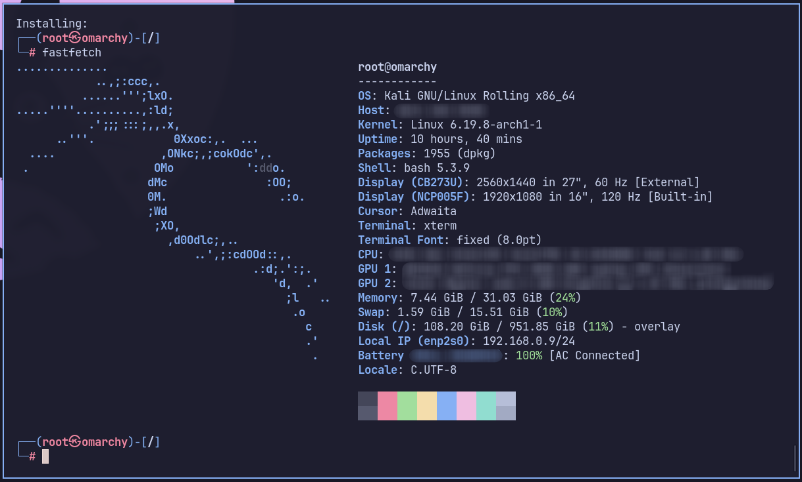

← ← ← 20/03/2026, 18:22:25 | Postado por: Danilo Maia Florenzano

Trabalhar com o Kali em um container tem suas vantagens e desvantagens, e a maioria delas é as mesmas que você encontraria em qualquer situação semelhante (performance, isolamento de ambiente, etc). E, para mim, os pontos principais que me levaram a optar pelo container foram dois:
Aproveitar o meu workflow já configurado. Utilizo, até o momento da escrita desse post, Hyprland como gerenciador de janelas. Utilizar o Kali em um container sem ambiente gráfico me poupa de me adaptar ao workflow da distro ou de ter o trabalho de adaptar ele ao meu.
Ambientes gráficos, nesse caso, não me fazem falta. Algumas ferramentas no Kali, como Wireshark e Burp Suite, já fazem parte do meu dia a dia independente do estudo a parte que faço sobre segurança da informação e estão instaladas diretamente no meu SO host.
A imagem Docker do Kali não é nenhuma "gambiarra; é oficial e pode ser encontrada aqui.
Como sugerido no próprio portal, a imagem recomendada é a kali-rolling.
docker pull kalilinux/kali-rolling
Após o pull da imagem, o container já pode ser iniciado. Porém, aqui algumas configurações se fazem necessárias para o uso mais conveniente do sistema.
Antes de iniciar o container, recomendo que rode o seguinte comando para criar o volume em que as configurações feitas no Kali sejam persistidas:
docker volume create kali_data
O seguinte comando cria, inicia o container e em seguida já dá acesso ao Kali pelo bash:
docker run -it \
--name kali-lab \
--network host \
-v kali_data:/root \
--cap-add=NET_ADMIN \
--cap-add=NET_RAW \
kalilinux/kali-rolling /bin/bash
--network host: O container compartilha a interface de rede diretamente com a sua máquina real. Essencial para ataques de rede, sniffing, scanners e conexão com reverse shell.--cap-add=NET_ADMIN: Permite configurar interfaces de rede.--cap-add=NET_RAW: Permite que o Nmap crie pacotes "crus" para scans furtivos.A documentação do Kali informa que a imagem não possui as ferramentas padrões instaladas, e, portanto, é necessário executar o comando abaixo no bash do container:
apt update && apt -y install kali-linux-headless
Acompanhe a instalação até o final.
Seu Kali está pronto, e mesmo que você saia do container ou feche o terminal, basta iniciá-lo novamente com docker start kali-lab e acessá-lo com docker exec -it kali-lab /bin/bash.
Pra facilitar a vida, uma configuração opcional para quem usa Linux é adicionar uma função no ~/.bashrc que combina os comandos start e o exec -it. Dessa forma é mais simples iniciar o ambiente e abrir quantos terminais forem necessários dentro do container.
kali() {
# Verifica se o container existe
if [ "$(docker ps -aq -f name=kali-lab)" ]; then
# Se estiver parado, inicia
if [ ! "$(docker ps -q -f name=kali-lab)" ]; then
echo "Iniciando kali-lab..."
docker start kali-lab
fi
# Entra no container
docker exec -it kali-lab /bin/bash
else
echo "Erro: O container 'kali-lab' não existe. Execute o comando 'docker run' primeiro."
fi
}
Após essa função adicionada no arquivo ~/.bashrc, basta executar kali no terminal para acessar o ambiente.
~ ❯ kali
┌──(root㉿omarchy)-[/]
└─# bom hacking!
Feito!